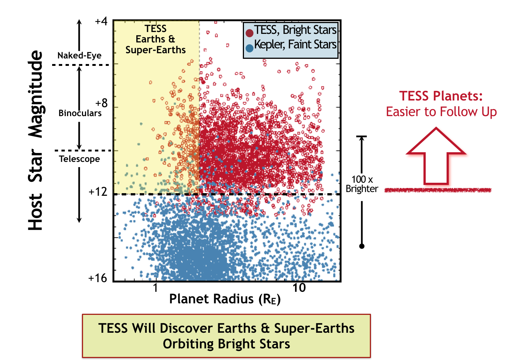

TESS will search for planets outside of our solar system with a primary goal of finding nearby planets that are amenable to characterization with ground-based follow-up surveys. Specifically, the primary science requirements of the TESS mission are as follows:
-
Search over 200,000 stars to discover planet with periods <10 days and radii <2.5 Earth radii orbiting the brightest stars in the solar neighborhood and discover planets with radii at least 2.5 Earth radii distributed across the celestial sphere.
-
Search for transiting planets with periods up to 120 days among the ~10,000 stars in regions surrounding the ecliptic poles.
-
Determine the masses for at least 50 planets with radii <4 Earth radii.
TESS will survey 200,000 of the brightest stars near the Sun, primarily stars with spectral types ranging from F5 to M5, to search for transiting exoplanets. Additional follow-up with ground- and space-based missions, including NASA’s James Webb Space Telescope, will allow astronomers to study the atmospheres of many of these planets. The TESS legacy will be a catalog of the nearest and brightest main-sequence stars hosting transiting exoplanets.
In addition to its search for exoplanets, TESS will allow scientists from the wider community to request targets for astrophysics research on approximately 10,000 additional objects during the mission through its Guest Investigator program.
The transit method
The TESS mission will search for planets via the transit method, the same method used by the Kepler Mission. The transit method of detecting exoplanets involves monitoring the brightness of many stars to look for periodic dips that could reveal planets crossing in front of the stars, blocking a fraction of their light, as viewed from the spacecraft. Transit photometry allows a very precise measure of a planet's orbital period, the depth of the folded transit light curve can reveal the planet's size compared to the star's size, and the width can reveal the duration of the transit.

The transit method of detecting exoplanets involves monitoring the brightness of stars to identify periodic drops caused by planets crossing in front and blocking a fraction of their light as viewed by the spacecraft. Image credit: NASA
Sky coverage
TESS will observe over 90% of the sky (an area 400 times larger than that monitored by Kepler) over the 2 year prime mission. TESS will observe many more nearby, bright stars compared to the Kepler Mission.

The TESS search space compared to that of the Kepler Mission. Image Credit: Zach Berta-Thompson
Types of stars monitored
The stars TESS will study are 30 to 100 times brighter than those the Kepler mission and K2 follow-up surveyed, which will enable far easier follow-up observations with both ground-based and space-based telescopes.

Period sensitivity
The orbital periods that TESS will be sensitive to will depend on the fraction of overlap among the sectors, which depends on the ecliptic latitude. Closer to the ecliptic, a FOV will have at most 27 days of coverage, meaning planet orbital periods will need to be shorter than this duration. Detecting 3 transits is ideal to constrain the orbit, but many 2-transit planet candidates will be found, necessitating additional follow-up to measure additional transits. At higher latitudes, the overlap of sectors will enable 351 of coverage per year.